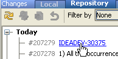
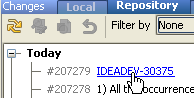

All you have to do is to define issue navigation patterns in the Settings | Version Control dialog:


Clicking this hyperlink brings you directly to an issue in your task tracker.|
Did you know that IntelliJ IDEA lets you jump from your checkin comment to an issue in tracker? All you have to do is to define issue navigation patterns in the Settings | Version Control dialog:
 Clicking this hyperlink brings you directly to an issue in your task tracker. |